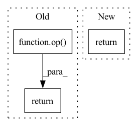

Pattern ID :4214
Before Change
def squeeze(x, axis=None):
op = P.Squeeze(axis)
return op( x)
def unsorted_segment_sum(x, segment_ids, num_segments):
segment_ids = ms.Tensor(segment_ids)After Change
def squeeze(x, axis=None):
return msnp.squeeze(x, axis)
def unsorted_segment_sum(x, segment_ids, num_segments):In pattern: SUPERPATTERN
Frequency: 3
Non-data size: 3
Instances Fragment ID: 15486680
Project Name: tensorlayer/tensorlayerx
Commit Name: e1d0a8eac81bfce74977e2670201b85ff4f3f91b
Time: 2022-05-17
Author: jiaronghan@outlook.com
File Name: tensorlayerx/backend/ops/mindspore_backend.py
M Class Name: AnonimousClass
N Class Name: AnonimousClass
M Method Name: squeeze(2)
N Method Name: squeeze(2)
M Parent Class:
N Parent Class:
M File Name: tensorlayerx/backend/ops/mindspore_backend.py
N File Name: tensorlayerx/backend/ops/mindspore_backend.py
M Start Line: 1782
M End Line: 1783
N Start Line: 1785
N End Line: 1785
Before Change
def complex_matmul_2d(a, b):
// (batch, in_channel, x, y), (in_channel, out_channel, x, y) -> (batch, out_channel, x, y)
op = partial(torch.einsum, "bixy,ioxy->boxy")
return torch.stack([
op(a[..., 0], b[..., 0]) - op( a[..., 1], b[..., 1]) ,
op(a[..., 1], b[..., 0]) + op(a[..., 0], b[..., 1])
], dim=-1)
After Change
op(c[..., 1], b1[..., 0]) + op(c[..., 0], b1[..., 1])
], dim=-1)
return out
def forward(self, z, x):
// z.shape == [n_batches, 2 * flat_size, 1] Fragment ID: 15486681
Project Name: alasdairtran/fourierflow
Commit Name: d44f34cefc973a288732dacab07df2393ddba030
Time: 2021-07-27
Author: alasdair.tran@gmail.com
File Name: fourierflow/modules/fourier_deq.py
M Class Name: SpectralConv2d
N Class Name: SpectralConv2d
M Method Name: complex_matmul_2d(3)
N Method Name: complex_matmul_2d(2)
M Parent Class: nn.Module
N Parent Class: nn.Module
M File Name: fourierflow/modules/fourier_deq.py
N File Name: fourierflow/modules/fourier_deq.py
M Start Line: 88
M End Line: 91
N Start Line: 64
N End Line: 80
Before Change
if self.config_method.startswith("cas("):
return op( *self.operator_explicit(mo, bop))
else:
return op(*self.operator_single_double(mo, bop))
def operator_explicit(self, mo, bkin):After Change
if op is not None:
return op(*op_vals)
else:
return op_vals
def operator_explicit(self, mo, bkin):
rComputes the value of any operator using the trace trick for a product of spin up/down determinant. Fragment ID: 15486676
Project Name: nlesc-jcer/qmctorch
Commit Name: 26e711f60498e2c5d7ce359b1e1a882929defaab
Time: 2021-01-12
Author: nicolas.gm.renaud@gmail.com
File Name: qmctorch/wavefunction/pooling/slater_pooling.py
M Class Name: SlaterPooling
N Class Name: SlaterPooling
M Method Name: operator(4)
N Method Name: operator(4)
M Parent Class: nn.Module
N Parent Class: nn.Module
M File Name: qmctorch/wavefunction/pooling/slater_pooling.py
N File Name: qmctorch/wavefunction/pooling/slater_pooling.py
M Start Line: 253
M End Line: 258
N Start Line: 255
N End Line: 274